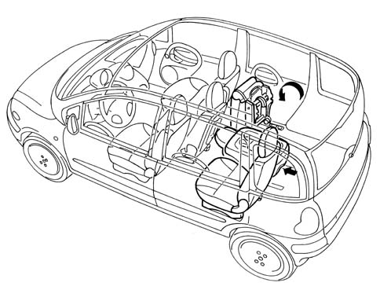
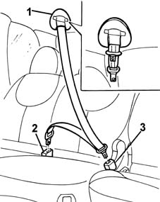

Introduction - REAR SEATS
- Path
- Descriptions > 70 FITTINGS > 7050 REAR SEATS > Introduction - REAR SEATS
- Kind
- system description
- Applies to
- all engines; all production periods
- Interactive page
- https://sloeber94.github.io/elrnDB-fMltpl/en/#/2892463
Applies to: all engines; all production periods
-

-
The rear seats are similar to the front seats in terms of size and structure. For the general specifications of the seats7045 FRONT SEATS.
To ensure optimum flexibility of the passenger compartment and the luggage compartment the three rear seats can be easily removed thanks to a rapid release mechanism and their light weight (15 kg). There are two possible attachments to the floor at 10 cm intervals and they can also be folded fowards.
The centre seat is adjustable lengthwise to facilitate rapid positioning in relation to the front centre seat, normally kept fully retracted in relation to the other front seats.
The centre seat also has an "equipped" backrest which, if tilted fully forwards, turns into a table with an oddments pocket and glass holders.
The three seats have inertia reel seat belts.
The housing for the reel for the centre seat is very special. In effect, it is fixed inside the roof lining and both braches of the belt are attached to the seat.

1, Reel 2, Right fixing 3, Left fixing